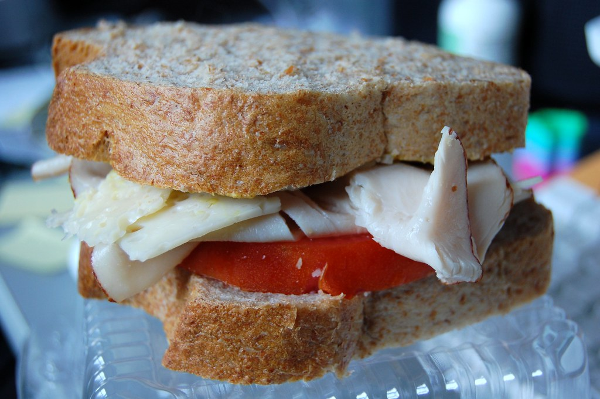

Turkey Sandwich

Description
A fantastic sandwich with sliced turkey, guacamole,
toasted whole wheat bread, fresh tomato, lettuce,
bean sprouts, yellow mustard and light mayo. For cheese
lovers, Colby-Jack makes a great addition as well.
No one I know can resist this one!
Ingredients
- slices whole wheat bread, toasted (Optional)
- 1 tablespoon mayonnaise
- 2 teaspoons Dijon-style prepared mustard
- 3 slices smoked turkey breast
- 2 tablespoons guacamole
Steps
- Spread mayonnaise on one slice of toast
- spread mustard on the other.
- Arrange the sliced turkey on one side.
- Spread guacamole over the turkey.
- Pile on the salad greens, bean sprouts, avocado and cheese.
- Finish with tomato slices, then place the remaining slice of toast on top.
Home